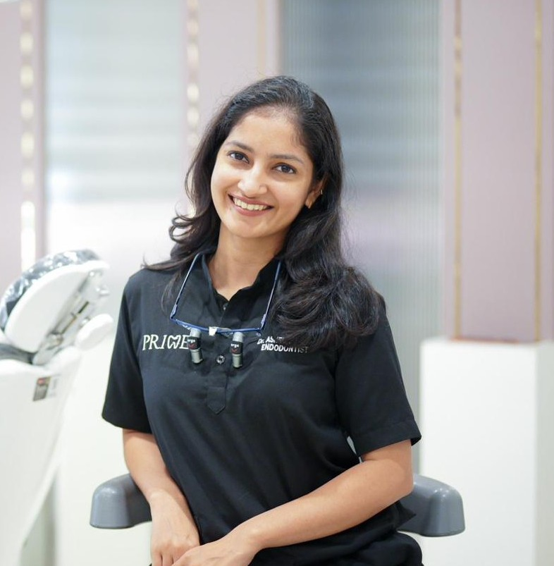
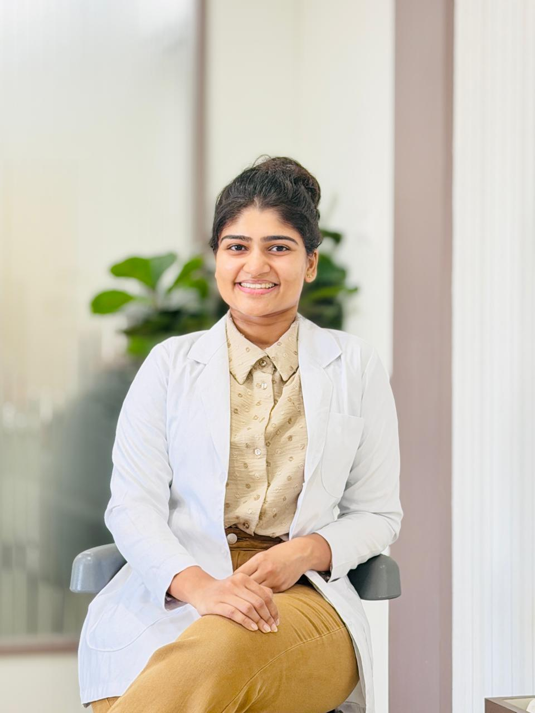
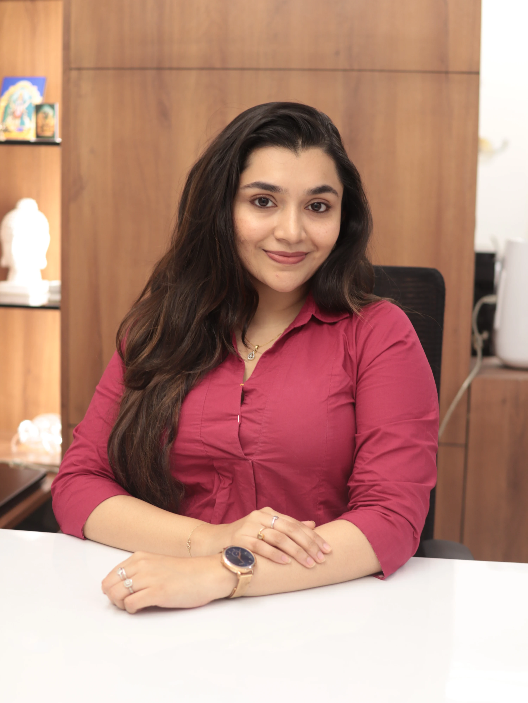
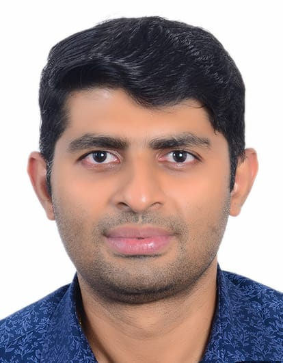

Our Team
Multi-Specialist Approach

Dr. Karthik Kumar
Oral and Maxillofacial Surgeon

Dr. Ashel Olivia Dsouza
Restorative Dentist and Endodontist

Dr. Satwik Varadraj
Periodontist

Dr. Shravan Shetty
Orthodontist

Dr. Manisha Deepanjan
Pedodontist

Dr. Prithi Shenoy
Consultant Pedodontist

Dr. Shreyas Rai
Endodontist

Dr. Sameep Shetty
Oral Surgeon
The Art & Science
"Dentistry today is far beyond traditional extractions. It is a precise blend of medical science, digital technology, and artistic craft. At Prime Dental & Aesthetic, we believe in preserving your natural structure through minimally invasive techniques while utilizing 3D digital workflows to ensure your results are perfectly tailored to your facial Aesthetics."